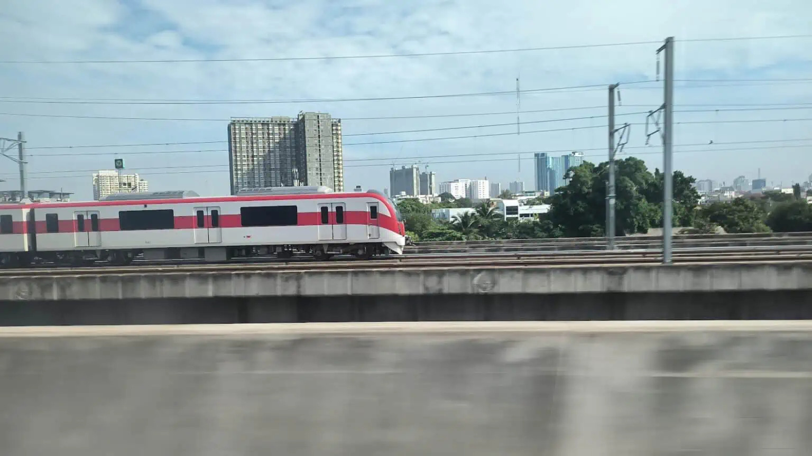
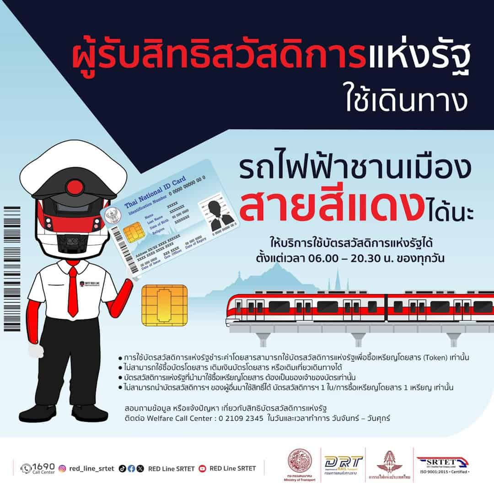

บัตรสวัสดิการแห่งรัฐ ใช้ซื้อเหรียญเดินทางรถไฟฟ้าสายสีแดงได้เลย โดยผู้รับสิทธิสวัสดิการแห่งรัฐสามารถใช้สิทธิ์ในการเดินทางรถไฟฟ้าชานเมืองสายสีแดงได้แล้ว ทุกสถานี!

โดยผู้ใช้บริการที่ถือบัตรสวัสดิการแห่งรัฐ สามารถใช้สิทธิ์ซื้อเหรียญโดยสารตั้งแต่วันที่ 16 พฤศจิกายน 2566 เป็นต้นไป ให้บริการตั้งแต่เวลา 06.00 น. – 20.30 น. ของทุกวันเท่านั้น
โดยเงื่อนไขการใช้สิทธิ์บัตรสวัสดิการแห่งรัฐ ในการซื้อเหรียญสายสีแดงดังนี้
- ใช้บัตรสวัสดิการแห่งรัฐเพื่อซื้อเหรียญโดยสาร (Token) เท่านั้น ไม่สามารถใช้ซื้อบัตรโดยสาร แบบเติมเงินบัตรโดยสาร หรือเติมเที่ยวเดินทาง
- บัตรสวัสดิการแห่งรัฐที่นำมาใช้ซื้อเหรียญโดยสาร ต้องเป็นของเจ้าของบัตรสวัสดิการแห่งรัฐเท่านั้น ไม่สามารถนำบัตรสวัสดิการฯ ของผู้อื่นมาใช้สิทธิ์ได้ บัตรสวัสดิการฯ 1 ใบ/การซื้อเหรียญโดยสาร 1 เหรียญ เท่านั้น
สามารถสอบถามเพิ่มเติมเกี่ยวกับสิทธิ์บัตรสวัสดิการแห่งรัฐผ่านทาง Call Center บัตรสวัสดิการแห่งรัฐ โทร 02-109-2345 สอบถามเกี่ยวกับการออกบัตร และการเดินทางรถไฟฟ้าสายสีแดง โทร Call Center : 1690 ตลอด 24 ชั่วโมง

อ้างอิง RED LINE SRTET